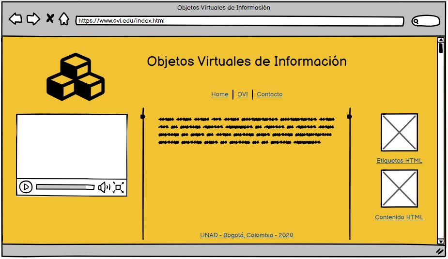

Con la quinta y más reciente versión de HTML se han implementado nuevas etiquetas que nos permiten organizar de manera más intuitiva, todos los contenidos de nuestros sitios WEB y a su vez, gracias al significado semántico que tienen las nuevas equiquetas, se facilita la distribución de los contenidos en nuevos y diversos dispositivos como celulares inteligentes, tablets, televisores inteligentes y, hoy por hoy, electrodomésticos que ya tienen interfaces de usuarios que les permiten navegar por la WEB. Por tanto, este OVI se pone al alcance de todos los que quieran conocer este lenguaje de Maquetación y tener una herramienta prática para su aprendizaje.
Developer.mozilla.org/en-US/docs/Web/HTML
https://www.anerbarrena.com/etiqueta-section-html5-4891/L
Sintaxis: <section> ... </section>
Usamos la etiqueta <section> para agrupar contenido, generalmente texto, cuya información guarda relación entre sí. En ella podemos agregar cualquier cantidad de párrafos,
pero cuidamos que todo su contenido se trate del mismo tema. Una forma fácil de identificar si la información se debería incluir en la etiqueta <section>
es si se le puede poner un título tal como haríamos con el capítulo de un libro. Es importante considerar que si queremos hacer referencia
a un bloque para aplicar estilos con CSS y solo con ese fin, no es válido usar la etiqueta <section>; si el objetivo fuera solo
la de tener un bloque para dar estilo deberíamos usar la etiqueta <div>.

Sintaxis: <article> ... </article>
Usamos la etiqueta <article> para crear un bloque sencillo de contenido que puede ser parte
de un bloque mayor de la etiqueta <section>, no obstante, podemos usarla fuera de la etiqueta <section>
para crear un bloque simple con información independiente de otros bloques de contenido.
Sintaxis: <aside> ... </aside>
Ahora con la etiqueta <aside> podemos agrupar contenido que es totalmente independiente del contenido central
del sitio web y que generalmente se presenta a los lados de la página WEB. Información como noticias cortas, enlaces a sitios de interés,
sección de redes sociales, incluso calendarios y gadgets. En esta etiqueta podemos volver a usar etiquetas como <section> y <article>
tal como se muestra en la siguiente imagen.

Usamos la etiqueta <footer> para poner información que generalmente va al final del sitio WEB, tal como información
de derechos de autor, información sobre el autor como dirección, ciudad y también pueden ir enlaces de referencia al contenido general. Si bien
su uso común es único para el final del sitio WEB, también puede ser pie de página de artículos más pequeños que quieran refenciar
su contenido y registrar algún dato bibliográfico. Por ejemplo, el sitio web de donde se recuperó un articulo o una imagen.
<footer> al final de cada bloque de la etiqueta <article>
para registrar la fecha de publicación.
